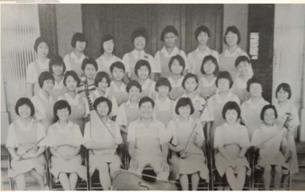
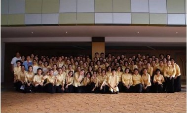

坤成华乐团简介
坤成中学华乐团成立于1989年10月。
从最初的28位团员，在经过时隔34年的努力，已发展成了今日大家所见的一百余人的大家庭，这一路走来委实不容易。
每一天，乐团都在不断地进步。
纵使中途遇到了许多的挫折及困难，乐团从未选择放弃，而是咬紧牙关坚持不懈地挺了过去，为的是要把这个像家一样的乐团守好；把中华传统音乐文化传承下去。

于1989年拍摄

于2019年拍摄
历年演奏会
| 年份 |
演奏会 |
| 2007年 |
第一场演奏会《音韵·春晖情》 |
| 2008年 |
举办《音韵·翔鸣》演奏会 |
| 2010年 |
举办《东方破晓》演奏会 |
| 2011年 |
举办《龙的传奇》演奏会 |
| 2013年 |
举办《东方星熙》演奏会 |
| 2014年 |
举办25周年《海韵天鸣》演奏会 |
| 2016年 |
举办《音航·旭梦》演奏会 |
| 2019年 |
举办30周年《卅》演奏会 |
历年交流会
| 年份 |
交流会 |
| 2008年 |
与中国北京华乐交流的《寻根之旅》 |
| 2011年 |
参加第七届《长三角》民族乐团展演 |
| 2013年 |
受邀参加《中国寻梦之旅》 |
| 2017年 |
赴台湾交流会《乐想·盛放》 |
| 2019年 |
与台湾慈济大学附属高级中学国乐团交流 |
历年团内营
| 年份 |
团内营 |
| 2017年 |
第一届团内营《屋檐下的梦想》 |
| 2018年 |
第二届团内营《缘起·相知》 |